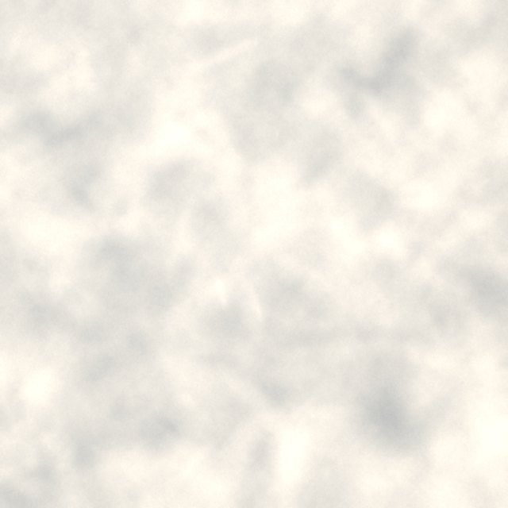
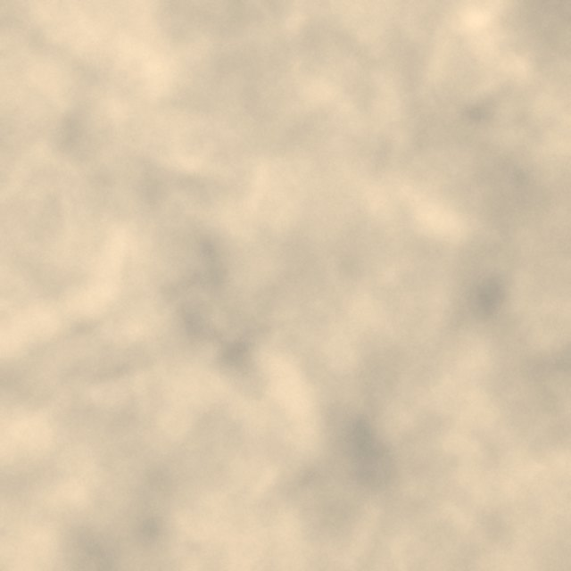
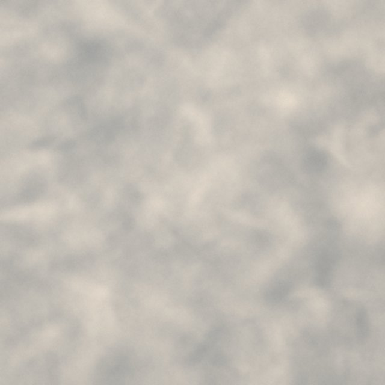
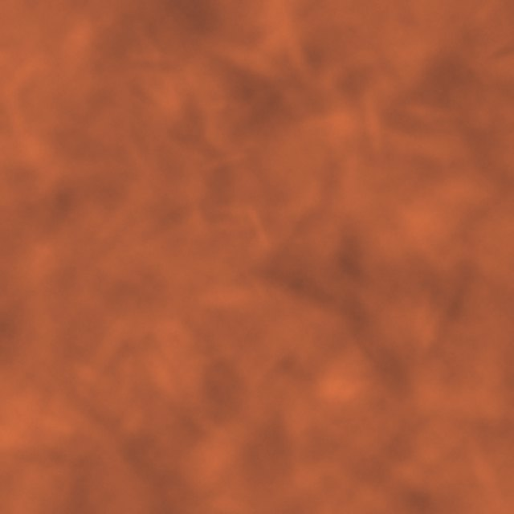

Spécialité
Sol résine & béton ciré
dans les Yvelines.
Un revêtement continu, appliqué chez vous, qui habille sols, murs, douches, plans de travail et escaliers. Pas de joints, pas de coupes : une surface d’un seul tenant, à votre couleur.
- 01
Sans joints
Une surface lisse et continue, d’un mur à l’autre.
- 02
Facile à entretenir
Rien ne s’accroche dans les joints : un coup de serpillière suffit.
- 03
Moderne
Un rendu minéral et épuré, qui agrandit visuellement les pièces.
- 04
Sur mesure
Couleur et finition choisies ensemble, selon votre intérieur.
- 05
Sur votre carrelage existant
Pose possible sans tout casser, selon l’état du support.




Gris perle Teinte indicative
NuancierCouleur et finition au choix

Douche à l’italienne Illustration
Salle de bain & douche
Murs, sol et douche à l’italienne d’un seul tenant.

Plan de travail Illustration
Cuisine & plan de travail
Sols de cuisine, salon et chambre, plans de travail.

Escalier Illustration
Escaliers
Un escalier habillé de béton ciré, marche après marche.